BioYourOwnBowl provides a comprehensive pipeline for single-cell RNA-seq analysis using Seurat. This vignette demonstrates the main workflow using example data from article: https://pmc.ncbi.nlm.nih.gov/articles/PMC8376199/.The seurat object is downsampled and has metadata included.
This vignette includes the advanced visualizations, e.g. : scaled feature plots, violin plots (show bellies beyond zeros), heatmaps in 3 levels (cell-level, pseudobulk level and meta level), stacked bar plots, splited dimplots, classic volcano plots, double volcano plots (show 2 volcanos at the same time), box plots with paired dots (connect paired data point from one participant), venn plots showing DGE overlaps, treemaps showing TCR clonotype distribution in different timepoint per participant.
The plots will always be displayed in your RStudio. If a file name is provided, it’ll be saved as a png file at the same time.
# Install from GitHub
remotes::install_github("june-zhang-bioinfo/BioYourOwnBowl")#> Loading required package: SeuratObject
#> Loading required package: sp
#> 'SeuratObject' was built under R 4.4.0 but the current version is
#> 4.4.1; it is recomended that you reinstall 'SeuratObject' as the ABI
#> for R may have changed
#>
#> Attaching package: 'SeuratObject'
#> The following objects are masked from 'package:base':
#>
#> intersect, t
#>
#> Attaching package: 'dplyr'
#> The following objects are masked from 'package:stats':
#>
#> filter, lag
#> The following objects are masked from 'package:base':
#>
#> intersect, setdiff, setequal, union
#> ========================================
#> circlize version 0.4.16
#> CRAN page: https://cran.r-project.org/package=circlize
#> Github page: https://github.com/jokergoo/circlize
#> Documentation: https://jokergoo.github.io/circlize_book/book/
#>
#> If you use it in published research, please cite:
#> Gu, Z. circlize implements and enhances circular visualization
#> in R. Bioinformatics 2014.
#>
#> This message can be suppressed by:
#> suppressPackageStartupMessages(library(circlize))
#> ========================================
#>
#> Attaching package: 'Matrix'
#> The following objects are masked from 'package:tidyr':
#>
#> expand, pack, unpack
#> Loading required package: Rcpp
#> ========================================
#> ComplexHeatmap version 2.25.2
#> Bioconductor page: http://bioconductor.org/packages/ComplexHeatmap/
#> Github page: https://github.com/jokergoo/ComplexHeatmap
#> Documentation: http://jokergoo.github.io/ComplexHeatmap-reference
#>
#> If you use it in published research, please cite either one:
#> - Gu, Z. Complex Heatmap Visualization. iMeta 2022.
#> - Gu, Z. Complex heatmaps reveal patterns and correlations in multidimensional
#> genomic data. Bioinformatics 2016.
#>
#>
#> The new InteractiveComplexHeatmap package can directly export static
#> complex heatmaps into an interactive Shiny app with zero effort. Have a try!
#>
#> This message can be suppressed by:
#> suppressPackageStartupMessages(library(ComplexHeatmap))
#> ========================================
#>
#> Attaching package: 'pheatmap'
#> The following object is masked from 'package:ComplexHeatmap':
#>
#> pheatmap
#>
#> Attaching package: 'anndata'
#> The following object is masked from 'package:SeuratObject':
#>
#> Layers
#> scCustomize v3.2.2
#> If you find the scCustomize useful please cite.
#> See 'samuel-marsh.github.io/scCustomize/articles/FAQ.html' for citation info.
#>
#> Attaching package: 'rlang'
#> The following objects are masked from 'package:jsonlite':
#>
#> flatten, unbox
#>
#> Attaching package: 'matrixStats'
#> The following object is masked from 'package:dplyr':
#>
#> count
#> Warning: package 'yaml' was built under R version 4.4.3Load the processed object from the main pipeline.
data_dir_base <- system.file("extdata", package = "BioYourOwnBowl")
data_path <- file.path(data_dir_base, "GSE178756_processed.rds")
seurat_obj <- readRDS(data_path)
seurat_obj
#> An object of class Seurat
#> 9453 features across 5893 samples within 1 assay
#> Active assay: RNA (9453 features, 2000 variable features)
#> 3 layers present: counts, data, scale.data
#> 2 dimensional reductions calculated: pca, umap
colors <- c(
"#e6194B",
"#86D3B2",
"#5E8DBA",
"#F7A131",
"#911eb4",
"#46f0f0",
"#fabebe",
"#bcf60c",
"#B88C6D",
"#4d88e8",
"#FFFB47",
"#A1A74A",
"#7BB1A4",
"#b15928",
"#C493D4",
"#f58231",
"#0072B2",
"#D55E00",
"#009E73",
"#CC79A7",
"#F0E442"
)Provide specific genes of interest.
selected_features <- c(
"CD8A", "CD8B",
"CD3D", "CD3E", "CD3G",
"GZMB", "GZMA", "GZMH",
"PRF1", "NKG7", "GNLY",
"IL2RA", "TNFRSF9", "CD69",
"MKI67", "TOP2A",
"PDCD1", "LAG3", "TIGIT",
"CTLA4", "HAVCR2",
"CCR7", "SELL", "TCF7",
"LEF1", "IL7R"
)This function generates 2 feature plot, one has original scaling (all
cells have color), one has customized scaling, controlled by argument
percentile. Only the cells having values beyond this
percentile will have color. The higher the percentile, the
more focused the feature plots.
features_plots(
seurat_obj,
features = c("CD3D", "CD8A", "CD4"),
n_col = 3,
percentile = 0.95
)
#> Warning: The `slot` argument of `FetchData()` is deprecated as of SeuratObject 5.0.0.
#> ℹ Please use the `layer` argument instead.
#> ℹ The deprecated feature was likely used in the Seurat package.
#> Please report the issue at <https://github.com/satijalab/seurat/issues>.
#> This warning is displayed once every 8 hours.
#> Call `lifecycle::last_lifecycle_warnings()` to see where this warning was
#> generated.
#>
#> NOTE: FeaturePlot_scCustom uses a specified `na_cutoff` when plotting to
#> color cells with no expression as background color separate from color scale.
#> Please ensure `na_cutoff` value is appropriate for feature being plotted.
#> Default setting is appropriate for use when plotting from 'RNA' assay.
#> When `na_cutoff` not appropriate (e.g., module scores) set to NULL to
#> plot all cells in gradient color palette.
#>
#> -----This message will be shown once per session.-----
#> $original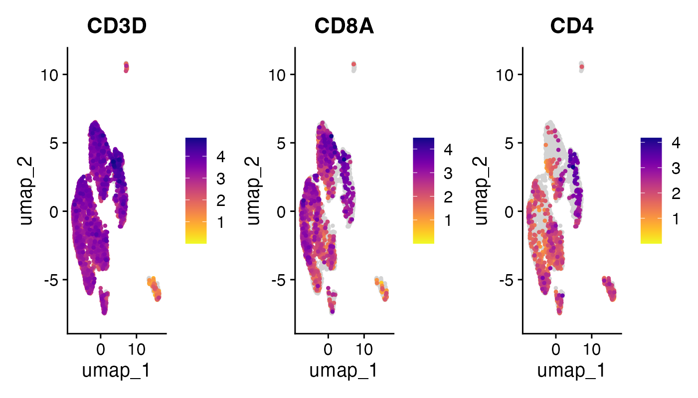
#>
#> $scaled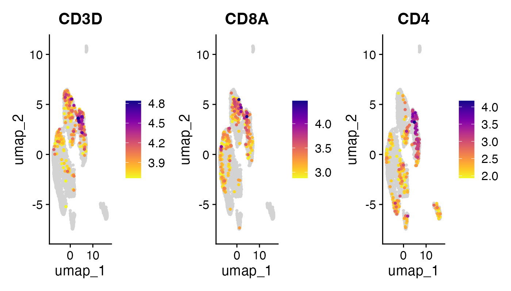
This function generates violin plots with box plot and dots
indicating the data distribution. The advantage is to see the bellies
beyond the zeros, which seurat built-in violin plot function fails to
do. It can also perform statistical tests and show the significance.
add_stats = T will trigger the tests on all binary
combinations, or you can indicates the comparison of interests.
violin_plots(
seurat_obj,
features = c("CD3D", "CD8A", "CD4"),
idents = "seurat_clusters",
file_name = "expression_violins.png", binwidth = 0.05
)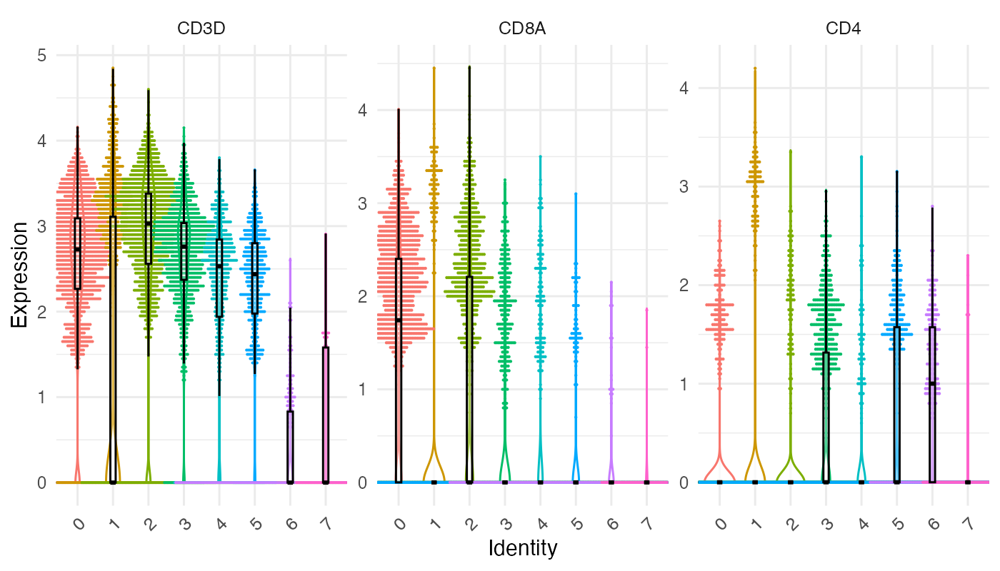
# seurat violin
Idents(seurat_obj) <- "seurat_clusters"
VlnPlot(seurat_obj, features = c("CD3D", "CD8A", "CD4"), alpha = 0.1)
#> Warning: `PackageCheck()` was deprecated in SeuratObject 5.0.0.
#> ℹ Please use `rlang::check_installed()` instead.
#> ℹ The deprecated feature was likely used in the Seurat package.
#> Please report the issue at <https://github.com/satijalab/seurat/issues>.
#> This warning is displayed once every 8 hours.
#> Call `lifecycle::last_lifecycle_warnings()` to see where this warning was
#> generated.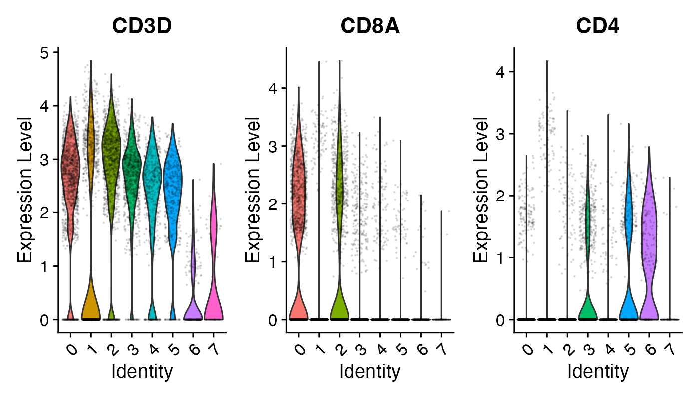
# statistical test for all comparisons
violin_plots(
object = seurat_obj,
features = c("CD3D", "CD8A", "CD4", "TOX", "TCF7"),
idents = "Time_point",
groups = c("Pre_Tx", "W4", "Normal"),
add_stats = TRUE,
test_method = "t.test",
binwidth = 0.05
)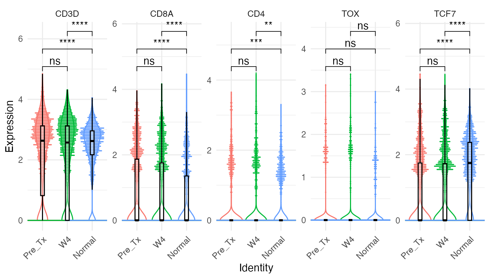
# statistical test for specified comparisons
my_comparisons <- list(
c("Pre_Tx", "W4"),
c("W4", "Normal")
)
violin_plots(
object = seurat_obj,
features = c("CD3D", "CD8A", "CD4", "TOX", "TCF7"),
idents = "Time_point",
groups = c("Pre_Tx", "W4", "Normal"),
add_stats = T,
comparisons = my_comparisons,
test_method = "wilcox",
binwidth = 0.05, colors = colors
)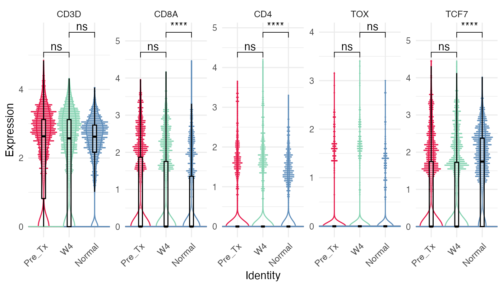
There are 3 types of heatmaps having different granularity: cell-level, pseudobulk-level and meta-level.
# cell level
hm <- heatmap_cell_level(
seurat_obj,
features = selected_features,
idents = "seurat_clusters",
colors = colors,
fontsize = 6
)
#> Centering and scaling data matrix
#> Warning: Different features in new layer data than already exists for
#> scale.data
#> Automatically calculated height: 6 inches for 23 genes
#> `use_raster` is automatically set to TRUE for a matrix with more than
#> 2000 columns You can control `use_raster` argument by explicitly
#> setting TRUE/FALSE to it.
#>
#> Set `ht_opt$message = FALSE` to turn off this message.
#> 'magick' package is suggested to install to give better rasterization.
#>
#> Set `ht_opt$message = FALSE` to turn off this message.
ComplexHeatmap::draw(hm)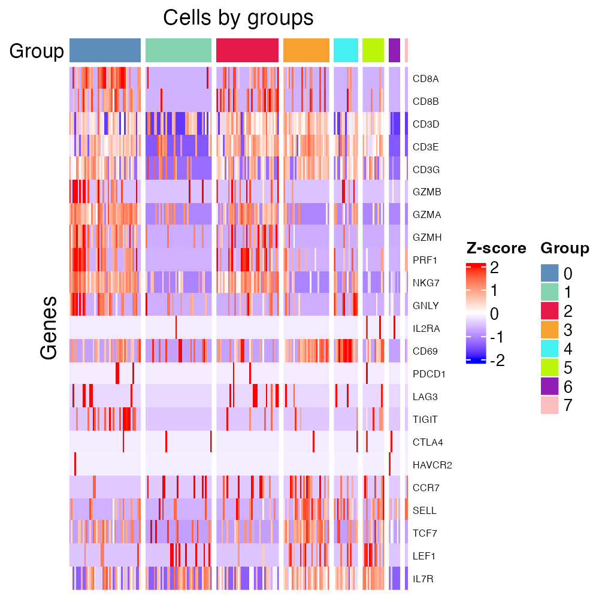
# pseudobulk level
heatmap_pseudobulk(object = seurat_obj,
features = selected_features,
groups = c("Pre_Tx", "W4", "Post_Tx", "Normal"),
idents = "Time_point",
pseudobulk_column = "orig.ident")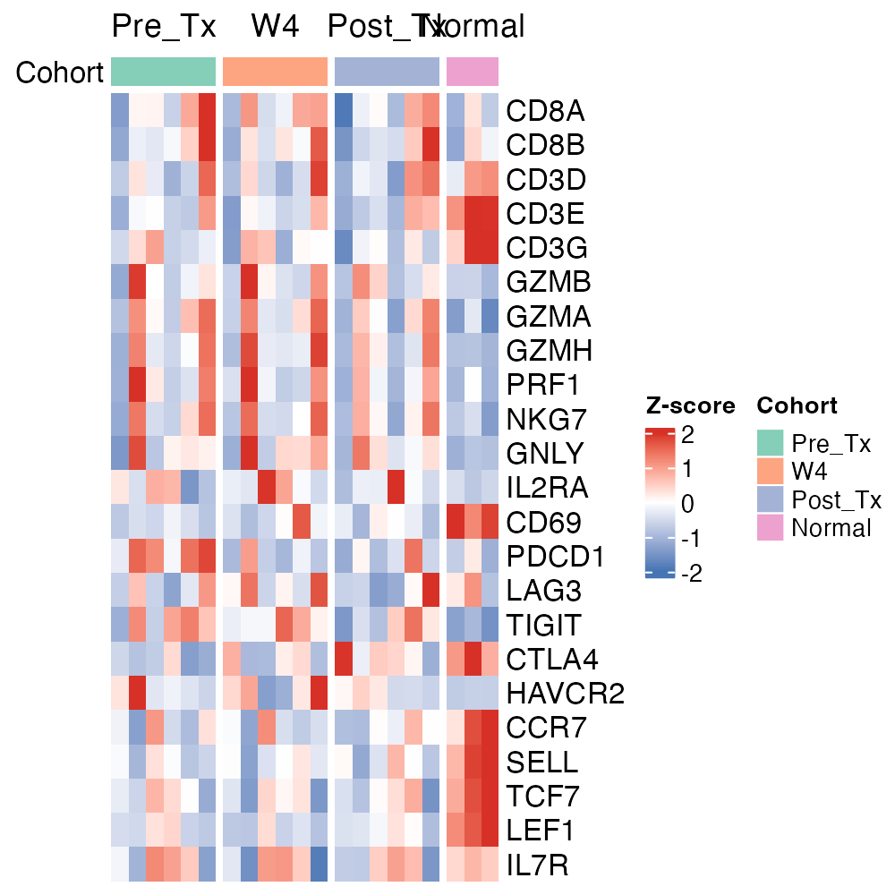
# meta level
heatmap_meta(seurat_obj, features = selected_features,
groups = c("Pre_Tx", "W4", "Post_Tx", "Normal"),
idents = "Time_point")
#> Normalizing layer: counts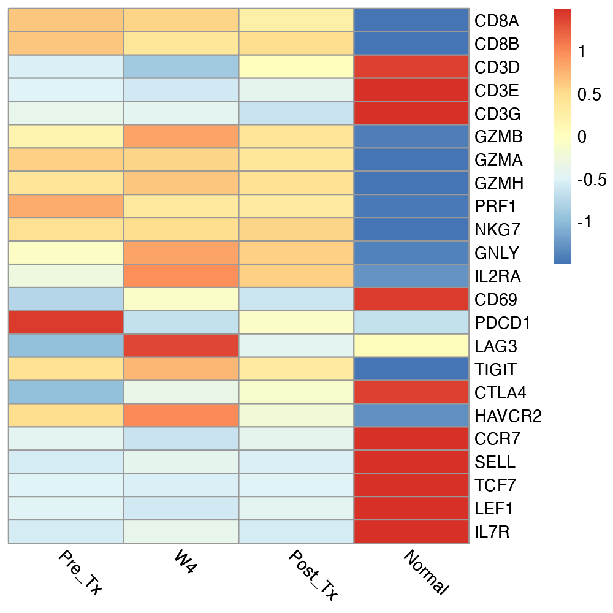
This function is versatile. You can use it to visualize the cluster distribution, or simply to check meta data. It can take up to 3 layers: the 1st layer represents the individual bar (the lowest level), the 2nd and 3rd are used to group the bars. You can specify the order of each layers (e.g. chronologically).
Use show_counts = TRUE to see the cell counts per
bar.
For the best layout, when you input 3 layers, combine_stacked_bars() is required to combine them.
# one layer
stacked_bar_plots(
seurat_obj,
idents = "seurat_clusters",
layers = c("Cohort"),
colors = colors,
show_counts = T
)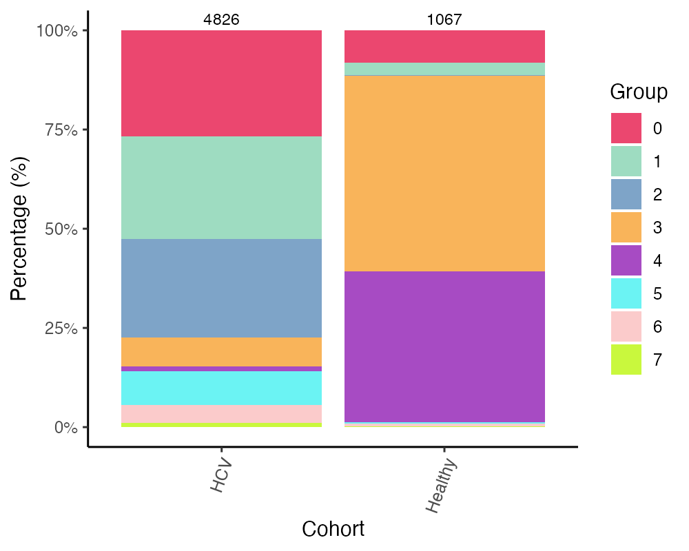
# two layers
stacked_bar_plots(
seurat_obj,
idents = "Time_point",
layers = c("orig.ident", "Cohort"),
colors = colors
)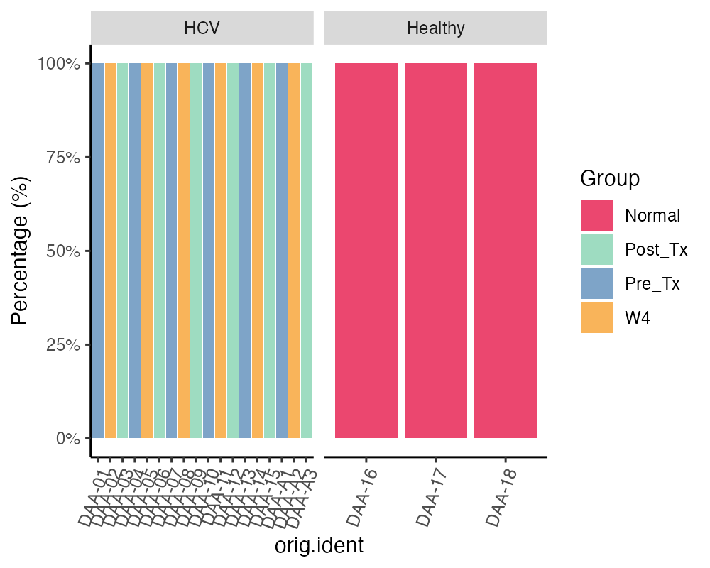
# three layers
plot_list <- stacked_bar_plots(
seurat_obj,
idents = "seurat_clusters",
layers = c("orig.ident","Time_point", "Cohort"),
layer_orders = list(
orig.ident = str_sort(unique(seurat_obj$orig.ident)),
Time_point = c("Pre_Tx", "W4", "Post_Tx", "Normal"),
Cohort = c("HCV", "Healthy")
),
colors = colors
)
#> Input 3 layers. Use combine_stacked_bars() to combine them.
combine_stacked_bars(plot_list = plot_list)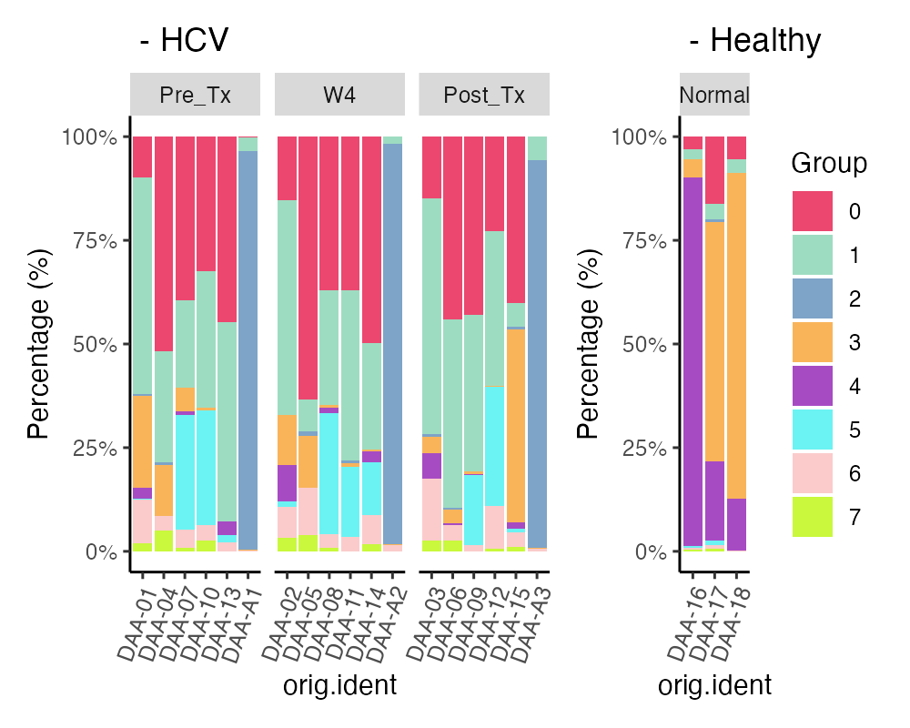
dimplots_split(seurat_obj,
split_var = "orig.ident",
group_var = "seurat_clusters",
colors = colors)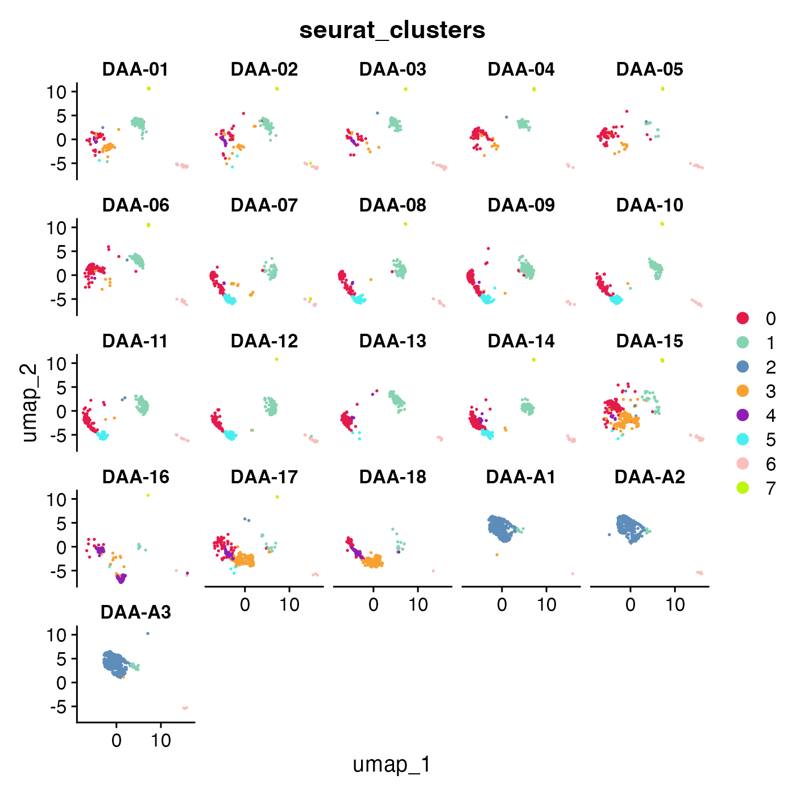
result <- volcano_plots(
object = seurat_obj,
idents = "Time_point",
ident1 = "Pre_Tx",
ident2 = "W4",
show_labels = selected_features,
title = "CD8 T cells"
)
#> Performing differential expression: Pre_Tx vs. W4
#> Warning: The `slot` argument of `GetAssayData()` is deprecated as of SeuratObject 5.0.0.
#> ℹ Please use the `layer` argument instead.
#> ℹ The deprecated feature was likely used in the Seurat package.
#> Please report the issue at <https://github.com/satijalab/seurat/issues>.
#> This warning is displayed once every 8 hours.
#> Call `lifecycle::last_lifecycle_warnings()` to see where this warning was
#> generated.
#> For a (much!) faster implementation of the Wilcoxon Rank Sum Test,
#> (default method for FindMarkers) please install the presto package
#> --------------------------------------------
#> install.packages('devtools')
#> devtools::install_github('immunogenomics/presto')
#> --------------------------------------------
#> After installation of presto, Seurat will automatically use the more
#> efficient implementation (no further action necessary).
#> This message will be shown once per session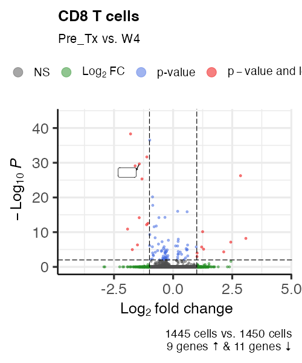
result <- volcano_plots(
object = seurat_obj,
idents = "Time_point",
ident1 = "W4",
ident2 = "Post_Tx",
show_labels = T,
title = "CD8 T cells", log2fc_cutoff = 0.7, label_size = 3
)
#> Performing differential expression: W4 vs. Post_Tx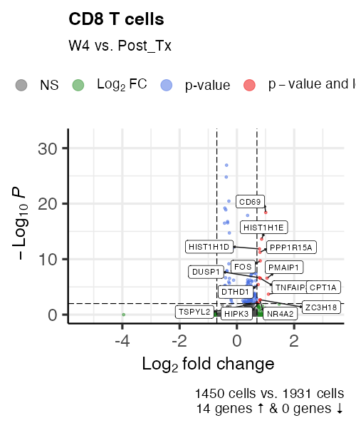
# create your comparison table
df <- data.frame(ident1 = "W4", ident2 = "Pre_Tx", ident3 = "Pre_Tx", ident4 = "Post_Tx")
Idents(seurat_obj) <- "Time_point"
double_volcano(seurat_obj,
df,
output_dir = "/Users/zz005/Documents/github/R/2dim_log2fc",
lfc_threshold = log2(1.5),
pval_cutoff = 0.05,
selected_genes = selected_features)
#> Warning: Removed 3 rows containing missing values or values outside the scale range
#> (`geom_text()`).
#> Processed row 1: W4 vs. Pre_Tx vs. Pre_Tx vs. Post_Tx
#> Warning: Removed 3 rows containing missing values or values outside the scale range
#> (`geom_text()`).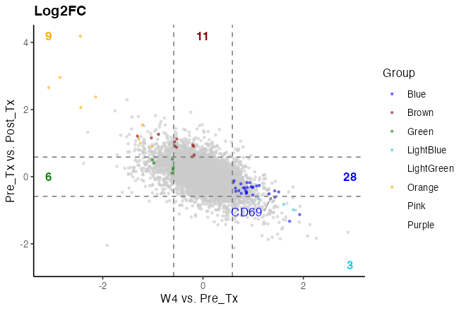
Since there is no paired timepoints in any of the participant in this object, no dots are connected.
boxplot_paired_points(seurat_obj, gene = "TOX",
timepoint_col = "Time_point",
participant_col = "orig.ident",
pre_label = "Pre_Tx",
post_label = "Post_Tx")
#> $plot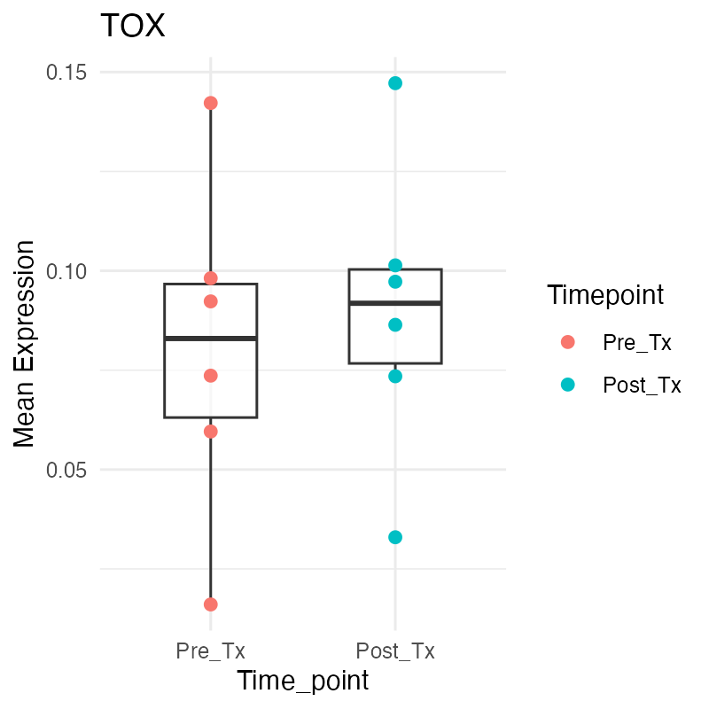
#>
#> $data
#> # A tibble: 0 × 3
#> # ℹ 3 variables: Patient <chr>, Timepoint <fct>, Value <dbl>
# Specify the comparisons of interest
comparisons <- list(
"Pre_Tx vs. W4" = c("Pre_Tx", "W4"),
"Pre_Tx vs. Normal" = c("Pre_Tx", "Normal"),
"W4 vs. Normal" = c("W4", "Normal")
)
# Make venn plot
result <- venn_plots(
object = seurat_obj,
comparisons = comparisons,
idents = "Time_point",
log2fc_threshold = 0.58,
min_pct = 0.3,
main = "Upregulated Genes")
#> Performing differential expression comparisons...
#> Pre_Tx vs. W4: Pre_Tx vs W4
#> Found 5 genes
#> Pre_Tx vs. Normal: Pre_Tx vs Normal
#> Found 44 genes
#> W4 vs. Normal: W4 vs Normal
#> Found 54 genesThis dataset doesn’t have TCR information, so we use simulated data for illustration purpose.
n_cells <- 1500
participants <- paste0("P", 1:3)
epitopes <- c("Epitope1", "Epitope2", "Epitope3")
meta <- data.frame(
participant = sample(participants, n_cells, replace = TRUE),
Specificity = sample(epitopes, n_cells, replace = TRUE, prob = c(0.5, 0.3, 0.2)),
raw_clonotype_id = sample(paste0("clono", 1:80), n_cells, replace = TRUE, prob = rexp(80, rate = 0.2)),
row.names = paste0("cell", 1:n_cells)
)
# Add some NA clonotypes for realism
meta$raw_clonotype_id[sample(1:n_cells, 40)] <- NA
# ---------------------------
# Create minimal Seurat object
# ---------------------------
# Simulate counts matrix
counts <- matrix(
rpois(n_cells * 300, lambda = 2),
nrow = 300,
ncol = n_cells,
dimnames = list(paste0("gene", 1:300), rownames(meta))
)
object <- CreateSeuratObject(counts = counts, meta.data = meta)
#> Warning: Data is of class matrix. Coercing to dgCMatrix.
tcr_treemaps(object,
top_epitope = c("Epitope2", "Epitope3"),
min_cells = 20,
output_dir = getwd(),
color_palette = colors)
#> Created 6 treemap plots in /Users/zz005/Documents/github/R/BioYourOwnBowl/vignettes
sessionInfo()
#> R version 4.4.1 (2024-06-14)
#> Platform: aarch64-apple-darwin20
#> Running under: macOS 26.1
#>
#> Matrix products: default
#> BLAS: /Library/Frameworks/R.framework/Versions/4.4-arm64/Resources/lib/libRblas.0.dylib
#> LAPACK: /Library/Frameworks/R.framework/Versions/4.4-arm64/Resources/lib/libRlapack.dylib; LAPACK version 3.12.0
#>
#> locale:
#> [1] en_US.UTF-8/en_US.UTF-8/en_US.UTF-8/C/en_US.UTF-8/en_US.UTF-8
#>
#> time zone: America/New_York
#> tzcode source: internal
#>
#> attached base packages:
#> [1] grid stats graphics grDevices datasets utils methods
#> [8] base
#>
#> other attached packages:
#> [1] yaml_2.3.11 sessioninfo_1.2.3
#> [3] matrixStats_1.5.0 rlang_1.1.6
#> [5] scCustomize_3.2.2 convert2anndata_0.2.0
#> [7] anndata_0.8.0 pheatmap_1.0.13
#> [9] ComplexHeatmap_2.25.2 harmony_1.2.4
#> [11] Rcpp_1.1.0 Matrix_1.7-0
#> [13] jsonlite_2.0.0 glue_1.8.0
#> [15] stringr_1.6.0 treemap_2.4-4
#> [17] RColorBrewer_1.1-3 eulerr_7.0.4
#> [19] circlize_0.4.16 tibble_3.3.0
#> [21] tidyr_1.3.1 dplyr_1.1.4
#> [23] ggplot2_3.5.2 Seurat_5.1.0
#> [25] SeuratObject_5.2.0 sp_2.2-0
#> [27] BioYourOwnBowl_0.0.0.9000
#>
#> loaded via a namespace (and not attached):
#> [1] RcppAnnoy_0.0.22 splines_4.4.1
#> [3] later_1.4.4 polyclip_1.10-7
#> [5] janitor_2.2.1 fastDummies_1.7.5
#> [7] lifecycle_1.0.4 rstatix_0.7.3
#> [9] doParallel_1.0.17 globals_0.18.0
#> [11] lattice_0.22-6 MASS_7.3-60.2
#> [13] backports_1.5.0 magrittr_2.0.4
#> [15] plotly_4.11.0 sass_0.4.10
#> [17] rmarkdown_2.30 jquerylib_0.1.4
#> [19] httpuv_1.6.16 otel_0.2.0
#> [21] sctransform_0.4.2 spam_2.11-1
#> [23] spatstat.sparse_3.1-0 EnhancedVolcano_1.20.0
#> [25] reticulate_1.44.1 cowplot_1.2.0
#> [27] pbapply_1.7-4 lubridate_1.9.4
#> [29] abind_1.4-8 zlibbioc_1.52.0
#> [31] Rtsne_0.17 GenomicRanges_1.58.0
#> [33] purrr_1.2.0 BiocGenerics_0.52.0
#> [35] GenomeInfoDbData_1.2.13 IRanges_2.40.1
#> [37] S4Vectors_0.44.0 ggrepel_0.9.6
#> [39] irlba_2.3.5.1 listenv_0.10.0
#> [41] spatstat.utils_3.2-0 goftest_1.2-3
#> [43] RSpectra_0.16-2 spatstat.random_3.4-3
#> [45] fitdistrplus_1.2-4 parallelly_1.45.1
#> [47] pkgdown_2.2.0 leiden_0.4.3.1
#> [49] codetools_0.2-20 getopt_1.20.4
#> [51] DelayedArray_0.32.0 tidyselect_1.2.1
#> [53] shape_1.4.6.1 UCSC.utils_1.2.0
#> [55] farver_2.1.2 stats4_4.4.1
#> [57] spatstat.explore_3.6-0 GetoptLong_1.1.0
#> [59] Formula_1.2-5 progressr_0.18.0
#> [61] ggridges_0.5.7 survival_3.6-4
#> [63] iterators_1.0.14 systemfonts_1.3.1
#> [65] polylabelr_0.3.0 foreach_1.5.2
#> [67] tools_4.4.1 ragg_1.5.0
#> [69] ica_1.0-3 gridExtra_2.3
#> [71] SparseArray_1.6.2 xfun_0.54
#> [73] MatrixGenerics_1.18.1 GenomeInfoDb_1.42.3
#> [75] withr_3.0.2 fastmap_1.2.0
#> [77] digest_0.6.39 timechange_0.3.0
#> [79] R6_2.6.1 mime_0.13
#> [81] ggprism_1.0.7 textshaping_1.0.4
#> [83] colorspace_2.1-2 Cairo_1.7-0
#> [85] scattermore_1.2 tensor_1.5.1
#> [87] spatstat.data_3.1-9 generics_0.1.4
#> [89] renv_1.1.0 data.table_1.17.8
#> [91] httr_1.4.7 htmlwidgets_1.6.4
#> [93] S4Arrays_1.6.0 uwot_0.2.4
#> [95] pkgconfig_2.0.3 gtable_0.3.6
#> [97] lmtest_0.9-40 SingleCellExperiment_1.28.1
#> [99] XVector_0.46.0 htmltools_0.5.9
#> [101] carData_3.0-5 dotCall64_1.2
#> [103] clue_0.3-66 scales_1.4.0
#> [105] Biobase_2.66.0 png_0.1-8
#> [107] optparse_1.7.5 snakecase_0.11.1
#> [109] spatstat.univar_3.1-5 knitr_1.50
#> [111] rstudioapi_0.17.1 reshape2_1.4.5
#> [113] rjson_0.2.23 nlme_3.1-164
#> [115] cachem_1.1.0 zoo_1.8-14
#> [117] GlobalOptions_0.1.3 KernSmooth_2.23-24
#> [119] vipor_0.4.7 parallel_4.4.1
#> [121] miniUI_0.1.2 ggrastr_1.0.2
#> [123] desc_1.4.3 pillar_1.11.1
#> [125] vctrs_0.6.5 RANN_2.6.2
#> [127] ggpubr_0.6.2 promises_1.5.0
#> [129] car_3.1-3 xtable_1.8-4
#> [131] cluster_2.1.6 paletteer_1.6.0
#> [133] beeswarm_0.4.0 evaluate_1.0.5
#> [135] cli_3.6.5 compiler_4.4.1
#> [137] crayon_1.5.3 ggsignif_0.6.4
#> [139] future.apply_1.20.0 labeling_0.4.3
#> [141] rematch2_2.1.2 forcats_1.0.1
#> [143] ggbeeswarm_0.7.3 plyr_1.8.9
#> [145] fs_1.6.6 stringi_1.8.7
#> [147] gridBase_0.4-7 viridisLite_0.4.2
#> [149] deldir_2.0-4 assertthat_0.2.1
#> [151] lazyeval_0.2.2 spatstat.geom_3.6-1
#> [153] RcppHNSW_0.6.0 patchwork_1.3.2
#> [155] future_1.68.0 shiny_1.12.0
#> [157] SummarizedExperiment_1.36.0 ROCR_1.0-11
#> [159] broom_1.0.11 igraph_2.2.1
#> [161] bslib_0.9.0